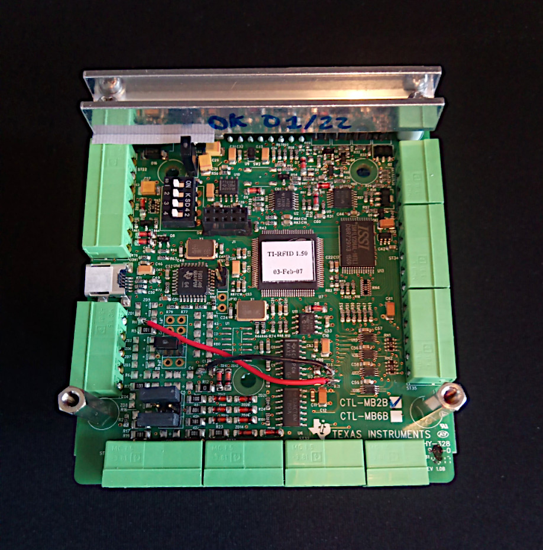

Acquisition Version: Janvier 2022 - V1.1 beta
Welcome to the prototype of the new Antavia mobile system, redesigned by Yoann Depalle, Theo Evrard and Robin Cristofari during summer campaign 2021-2022 in Crozet.
If you have any problem with the system, you can contact Robin Cristofari at r.cristofari@gmail.com and Celine Le Bohec at celine.lebohec@gmail.com.
This system version is tuned for the 2021 standard antenna. All antennas in operation now are built around a TIRIS RFID block and antenna tuning board (see the Components section below). Additionally, the current version features a Rasberry Pi model 2B computer, with a PCD8544 LCD screen (actually a recycled Nokia phone screen), with 3 buttons, and an Arduino power controller. Finally, multi-antenna versions feature a multiplexer board. Please double-check that you are running the system on the correct hardware..! (see below for details and pictures)
On the right harware, getting the antenna to work simply requires getting a copy of the SD system card, and wiring the power and antenna cables.
The antenna is a Litz cable loop: it should be burried ca. 5 centimeters bellow the ground, with both strands of the loop ca. 20 cm apart. Once the antenna is burried in its final position, you can measure its impedance using an LCR meter with the power turned off, and calculate the correct jumper setting in the Tuning tab of this web interface. Finally, you can power the unit back on and enter the "tuning mode" of the antenna by long-pressing the SAVE push-button on the Raspberry unit: the antenna will send pulses at high frequency, without logging the data, so you can take your time to adjust the setting.
You can move the jumpers to their correct position on the tuning board.
On the picture, the jumper pins are identified by "JP..." labels. The self is the large black and white element above the jumpers, below the red condenser blocks. Use a plastic screwdriver to adjust the self on the antenna tuning board:
Note that the self is symmetrical: moving it one turn away from the center in any direction will have exactly the same effect (so no need to go past the center when you adjust it). At the same time, use a test transponder and test for detection height: you should be able to achieve something like 30cm above ground at least. If you can't reach that, try one of the alternative jumper settings proposed ni the Tuning tab.
At this point, you can press HALT to exit the tuning mode, close up the case, and leave.
To download the data, simply press the data download button on the Home page. It will load the data file to your phone. The data file is in text format, and contains two kinds of information:
-lines starting with "#" contain information about the system operation (hourly checks that the system is running, low power messages, startup messages, etc).
-lines starting with "$" are in NMEA0183 format.
If they start with keyword GPRMC, they contain a GPS fix. Commas delimit pieces of information: time (HHMMSS.SSS), "A" if the fix is valid, latitude, "S" for South, longitude, "E" for East, velocity and course (useless here), date (DDMMYY) and some empty fields for additional data.
If they start with keyword RFID, they contain an RFID detection. We read, in order: the antenna name suffixed with antenna number (always 0 in single-antenna systems), the date (YYYYMMDD), the time (HHMMSS), the detected RFID number, the name of the corresponding penguin, its PIT-tagging date, its sex, and possibly its alarm if it's under alarm.
NOTE: information about the penguins comes from a local SQLITE database loaded into the system (/home/pi/AntaviaMobile/antavia.db). This database is mostly here for convenience on the field (it's nice to look up who has been detected) but will eventually grow out of date, and it's possible that some individuals are absent from it. That's normal - things will be set right when the data is analysed.
A data archive is also available from the home page. It references older data files that can be downloaded in case they were needed. Unless you have reinitialized the logs, these files overlap: all the information contained in older files is also contained in newer files. This is on purpose, to ensure information is not lost by accident.
The heart of the system is the TIRIS RFID antenna system: it's composed of three (or four) elements: (1) the TIRIS-CTL controller board, (2) the TIRIS-RFM radio frequency board, (3) optional (only on multi-antenna systems) a multiplexer board, and (4) an antenna tuning board.
The TIRIS-CTL board (below) modulates/demodulates binary data into radio frequency data. On all current antenna version, it is modified to output TTL (5V) instead of RS232 serial signal. This is achieved by shorting the level converter section of the board (the wires visible on the picture).
The TIRIS-RFM board (below on top of the CTL) amplifies the radio frequency data. Little can be done wrong about this one (but it can occasionally fry). On this picture, the TIRIS-CTL connectors are visible: in the middle, the micro-USB port is used for board configuration only. To the right of it, the large port is for power supply. From right to left: 12V+, 12V-, 12V+, 12V-. The next two are shunted together. The last one is left free. To the left of the micro-USB, the serial port leads to the Raspberry unit via a serial-USB adapter.
The tuning board (below) tunes the antenna to maximise resonnance and, as a result, detection distance. It is made up of capacitors of different value (the red blocks) that can be put in or out of the circuit with the different jumpers. It also includes a self (a copper coil with a mobile ferrite inside) that is used to fine-tune the antenna (see the installation procedure above). When a multiplexer board is used, it connects one TIRIS-RFM board with several tuning boards (one per antenna). In that case, the multiplexer board is also connected to the Pi's GPIO19 and GPIO26.
The Serial-USB adapter (below) connects the TIRIS-CTL to the Raspberry Pi unit and converts TTL signal to USB. This model uses the PL2303 chip and driver. So far, one has been known to fry, but it is usually rather trouble-free.
The core of the system is the Raspberry Pi microcomputer (below) which handles the data and controls the TIRIS modules. The current version uses a Raspberry Pi model 2B which is not the latest, but includes a built-in WiFi antenna. Older models do not, and need an externa USB WiFi dongle - these are not supported anymore by the current system version.
In the current hardware version, on top of the Raspberry is fitted a PCD8544 LCD screen (below), actually a Nokia phone screen, and three buttons. Press the HALT button long to shutdown the system (or to that through this interface on the Status page). Press ERASE long to reinitialize data files (older files will not be deleted, but zipped, and a new file will be intiialized). Press SAVE long to enter tuning mode at startup. Saving file through this buttons is deprecated in this system version - use this interface instead. The little switch on top is also deprecated - it has no function at all on this system version.
The power supply is handled by an Arduino microcontroller (below). It will send a shutdown signal to the Pi when the power supply voltage drops below ca. 12V to avoid brutally interrupting the system. It takes a 12V input, and should output something very close to 5V under normal conditions.

Finally, the GPS receiver (below) is used to synchronise time to exact UTC. The raspberry has no internal battery, so the clock stops when the power is shut, leading to time drift, so a GPS fix is necessary to set time. However, in the current version, detections are allowed after a reasonable amount of time has been spent trying to get a GPS fix, or if the GPS is not found (this can happen as a result of the rather fragile connector). You can also decide to skip the GPS fix at startup (mainly for tests indoors) by pressing HALT when prompted. Note that the system will attempt to get a GPS fix every hour until a valid signal has been received (from then on it will go along with that until the system is restarted).